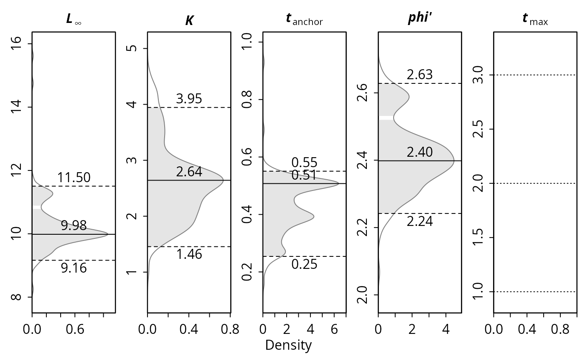
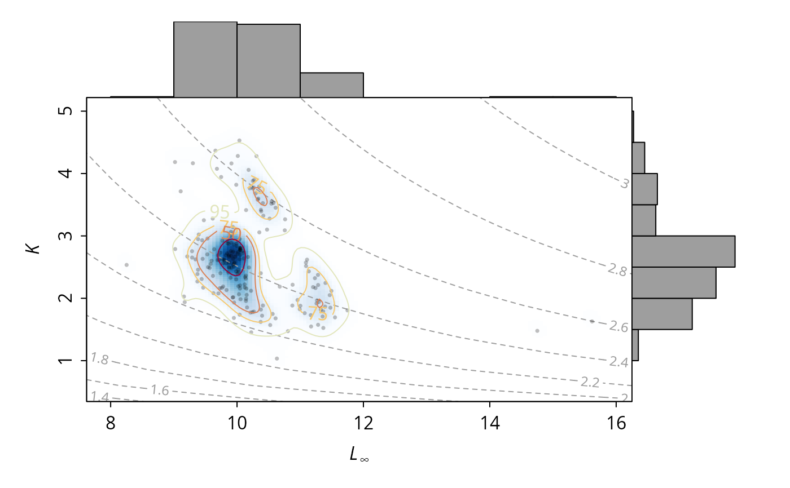

Bootstrapped VBGF estimates for the alba lfq dataset as
estimated by ELEFAN_GA_boot (200 resamples).
Usage
data(alba_boot)Format
A list of class `lfqBoot`, see ELEFAN_GA_boot.
Source
The data set was produced with following code (takes several minutes):
data(alba)
alba_boot <- ELEFAN_GA_boot(lfq = alba, MA = 7, seasonalised = FALSE,
low_par = list(Linf = 8, K = 0.1, t_anchor = 0),
up_par = list(Linf = 20, K = 5, t_anchor = 1),
popSize = 100, maxiter = 50, run = 10, pmutation = 0.2,
nresamp = 200, seed = 20, parallel = TRUE)Examples
data(alba_boot)
head(alba_boot$bootRaw)
#> Linf K t_anchor phiL agemax
#> 1 9.727168 2.161791 0.2750616 2.310787 2
#> 2 10.270001 3.897295 0.5521757 2.613904 1
#> 3 10.023212 2.420172 0.4312548 2.385860 2
#> 4 9.934719 2.540518 0.3884497 2.399233 2
#> 5 10.053528 2.801081 0.5081190 2.451963 2
#> 6 9.172023 1.938251 0.3674180 2.212340 2
alba_boot$maxDen
#> Linf K t_anchor phiL agemax
#> 10.0096156 2.7150279 0.4908732 2.4346091 2.0000000
alba_boot$CI
#> Linf K t_anchor phiL agemax
#> lo 9.171726 1.547109 0.2486596 2.114423 1
#> up 11.478216 4.165708 0.5486528 2.739438 2
# plot
univariate_density(alba_boot)

LinfK_scatterhist(alba_boot, phi.contour = TRUE)
